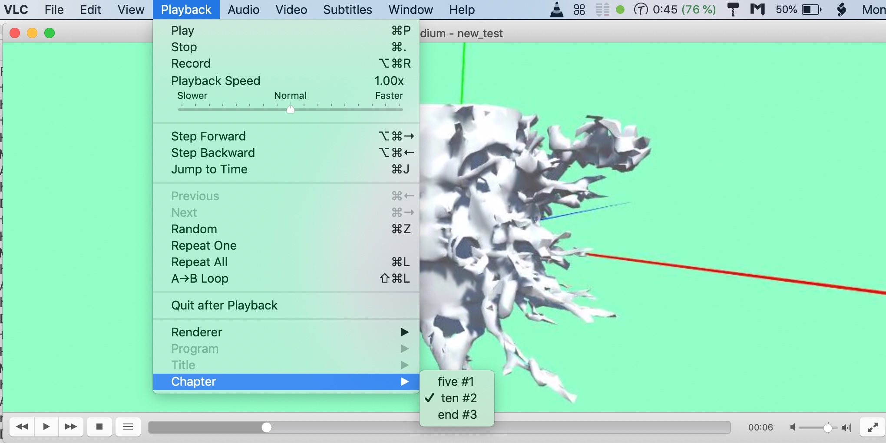
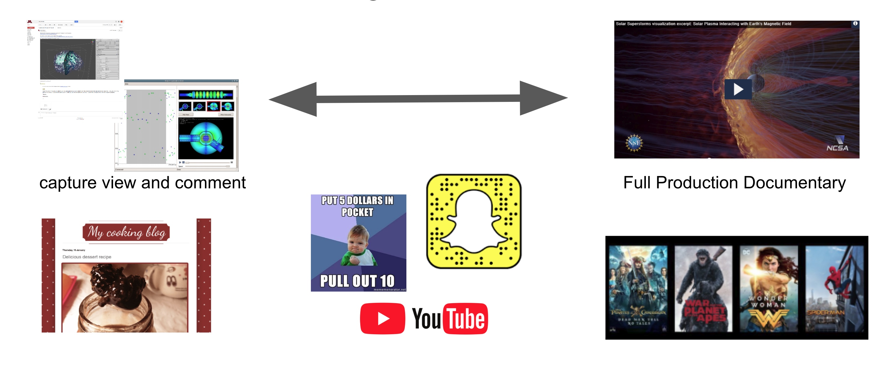

Demo


Abstract
A lightweight communication method for exchanging interactive visual narratives
Design
- Techniques for creating and exploring interactive lightweight scientific visual narratives
- Techniques for managing and referencing previous visual narratives
System
- Easily integratable underlying communication system
- The system is built on top of emails (no need to set a separate server for this)
- A protocol for exchanging interactive visual narratives for scientific visualization (flow and volume visualizations, for now)
- Allows various types of visualization and communication applications to be linked.
In this project, I worked on various tasks related to science visualization. Some of the key highlights include:
-
Creating a Video File from the Story: Initially using the Unity API CameraScreenShot, I encountered limitations in capturing only the desired video content. To overcome this, I devised a solution using a sub-camera that moved along a defined path to capture specific scenes. I merged the captured screenshots into a video using the ffmpeg plugin, resulting in a seamless video presentation.
-
Integrating 360 Images into the Lite Viewer: I implemented the integration of 360-degree images into a lightweight viewer. By applying UV mapping algorithms, I successfully mapped the panoramic images onto a sphere, enabling an immersive 360-degree viewing experience. User interaction was achieved through smooth rotation using controller or mouse input.
-
Dynamic Annotation Feature: I implemented a dynamic annotation feature within the viewer. By utilizing a raycaster and mouse clicks, users could place annotations on specific points of interest in the visualization. The annotations were visually rendered using a separate shader, ensuring independence from the scene.
-
Additional Engineering Development Skills: In addition to the graphics-related tasks, I also developed various engineering skills. This included integrating Google APIs for uploading and downloading visualization metadata on Google Drive, implementing a listener for drag-and-drop functionality in the viewer across different platforms, and more.